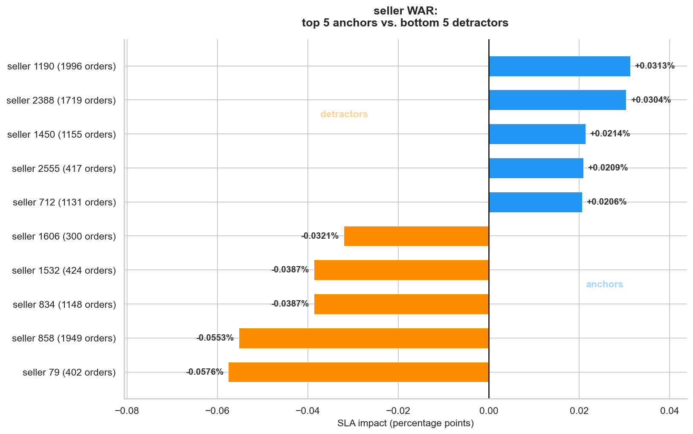

Marketplace · Vendor Performance · Python
Olist Seller Performance & SLA Analytics
Olist is a Brazilian marketplace where independent sellers fulfill orders directly. I treated sellers as vendors, delivery estimates as SLA commitments, and late deliveries as compliance violations — then ranked them the way a supply chain team does in a live operation.
View the notebook on GitHub →The grain decision
You cannot blame a vendor for someone else's late delivery.
I worked at the line level rather than the order level, and that choice drives everything downstream. On a marketplace, a single order can contain items from several sellers. If one seller ships late, the whole order arrives late.
Aggregate at the order level and you assign that failure to every seller on the order, including the ones who shipped on time. OTIF can only attribute a late delivery to the correct vendor when multi-seller orders are broken out per seller. It is a boring decision that determines whether the entire analysis is fair.
Platform SLA compliance sits at 91.9 percent. Roughly 8.1 percent of orders arrive after the estimated delivery date, which at scale is about 7,800 late deliveries.
The method
Wins above replacement, borrowed from baseball.
A vendor scorecard usually ranks sellers by late rate. That answers the wrong question. The question a vendor manager is actually asking is: if I fix this seller, how much does the platform number move?
So I built a WAR score for each seller — wins above replacement — measuring how platform SLA would change if that vendor were removed and replaced with an average one. The metric is self-weighting, so low-volume sellers neutralize naturally without needing an arbitrary volume threshold.

The finding
Late rate hides two completely different risk profiles.
Look at the two worst detractors on that chart. Seller 79 has 402 orders and costs the platform 0.0576 percentage points. Seller 858 has 1,949 orders and costs 0.0553. Nearly identical damage, arrived at through opposite mechanisms.
Seller 79 is a severe late rate at low volume. Seller 858 is a moderate late rate at high volume. These are not the same vendor problem and they do not get the same intervention. One needs a performance conversation or removal. The other needs capacity support.
Why WAR
Ranking by late rate would surface the first seller and bury the second. Ranking by volume would do the reverse. Only a counterfactual impact score surfaces both — and tells you they matter equally.
What I cut
The geographic analysis was scoped, tested, and thrown out.
I set out to compare seller performance by state, expecting it to be one of the headline sections. Seller representation turned out to be heavily concentrated in São Paulo and far too thin everywhere else to support a defensible state-level comparison.
I could have shipped the chart anyway. Every state would have had a bar, it would have looked complete, and the first person to ask "how many sellers is that based on?" would have taken the whole thing apart.
The cut
The exclusion is documented in the notebook, with the reasoning, rather than quietly dropped. An analysis you can defend is worth more than an analysis that looks thorough.